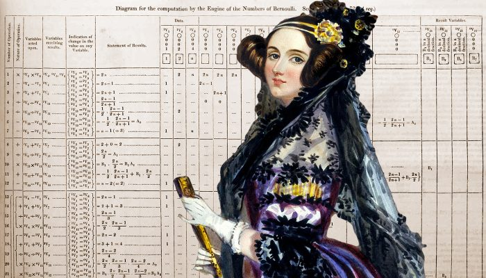

Ada Lovelace, a primeira programadora!
Ada Augusta King, Condessa de Lovelace, atualmente conhecida como Ada Lovelace, foi uma matemática e escritora inglesa. Hoje é reconhecida principalmente por ter escrito o primeiro algoritmo para ser processado por uma máquina, a máquina analítica de Charles Babbage. Durante o período em que esteve envolvida com o projeto de Babbage, ela desenvolveu os algoritmos que permitiriam à máquina computar os valores de funções matemáticas, além de publicar uma coleção de notas sobre a máquina analítica. Por esse trabalho é considerada a primeira programadora de toda a história.
“Estou em encantador estado de confusão”
Ada Lovelace nasceu Augusta Ada Byron em 10 de dezembro de 1815, em Londres, na Inglaterra. Filha do poeta George Gordon Byron, 6º Barão Byron, e de Anne Isabella. O casamento de Byron e Anne foi breve e marcado pelas traições do poeta, que havia se casado com a matemática porque estava endividado, e a família dela era rica. Cinco semanas depois do nascimento de Ada, Anne não pôde mais suportar os casos do marido e o abandonou. Ela então cuidou da educação da filha.
Na infância, Ada era obcecada com a ideia de criar mecanismos que voassem. Por isso, escreveu e ilustrou Flyology, um livro com suas ideias mais criativas de como alcançar esse objetivo.
Quando Ada foi a um baile, ela não encontrou um príncipe para se casar. Em vez disso, ela encontrou um velho matemático, Charles Babbage, que se tornou seu amigo ao longo da vida. Charles criou a máquina analítica, que poderia resolver cálculos gigantes e ainda poderia guardar os dados na memória. E Ada ajudou Charles a traduzir o artigo sobre a máquina, mas ela começou a fazer anotações sobre o invento.
Nessas anotações criadas por Ada há um algoritmo que só pode ser processado por máquinas, o que é considerado hoje o primeiro programa de computador do mundo. Além disso, ela desenvolveu uma visão sobre a capacidade dos computadores de irem além do mero cálculo ou processamento de números, enquanto outros, incluindo o próprio Babbage focavam apenas nessas capacidades. Sem dúvidas Ada foi uma mulher a frente de seu tempo!
- Autora:Carolina Nobre
- Front-End
- Link para Github